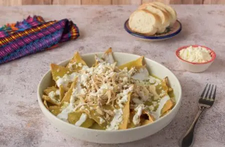

Chilaquiles

Description
Green chilaquiles are a traditional Mexican dish made with crispy tortilla chips covered in a tangy green sauce. The sauce is made from cooked green tomatoes, onions, garlic, and serrano peppers, blended with water and cilantro for a fresh flavor. The dish is topped with shredded chicken, crumbled fresh cheese, and a drizzle of Media Crema, creating a deliciously creamy and savory meal.
Ingredients:
- 600 grams of cooked green tomatoes
- 1/4 of a medium onion, cooked
- 2 cloves of garlic, cooked
- 2 cooked serrano peppers
- 1 1/2 cups of water
- 5 branches of disinfected cilantro
- 1 1/2 tablespoons of chicken bouillon powder
- 1 tablespoon of vegetable oil
- 1 bag of tortilla chips (350 g)
- 1 cooked and shredded chicken breast (500 g)
- 1 container of refrigerated Media Crema (190 g)
- 200 grams of crumbled fresh cheese
How to make it
Prepare the sauce
- For the sauce, blend the tomatoes with the onion, garlic, peppers, water, cilantro, and chicken bouillon. Heat the oil, pour in the blended mixture, and cook until it boils, stirring occasionally.
Mix with the tortilla chips
- Add the tortilla chips to the sauce and gently mix so they absorb some of the sauce.
Prepare your chilaquiles
- Serve the chilaquiles and pour a bit more sauce over them. Add the chicken, Media Crema, and cheese. Enjoy.